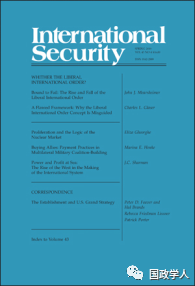

收录于合集 #理论研究 96个

简 介
** 【作者】** Nuno P. Monteiro 是耶鲁大学政治学副教授，主要研究方向为国际安全，具体涉及军事力量的威胁和使用、权力在国家间关系中的作用以及全球体系的历史演变。目前已经出版《单极政治理论》（Theory of Unipolar Politics）和《核政治:核扩散的战略原因》（Nuclear Politics：The Strategic Causes of Proliferation ）(与Alexandre Debs合著)两本书。
** **【 编译 】****金琳
** **【 校对 】****李源
** **【 审核 】****杨洋
** **【 来源 】****International Security, Vol. 36, No. 3 (Winter 2011/12), pp.9–40. http://muse.jhu.edu/article/461854.
** 【期刊】** International Security主要发表关于控制和使用武力的相关文章。其文章涉及战争与和平等传统主题，以及安全的最新层面，包括环境、人口和人道主义问题，与全球恐怖主义网络的崛起。其文章定义了关于美国国家安全政策的辩论，并为国际安全事务的学术研究设定了议程。根据2018年期刊引用报告，该期刊的影响因子为4.5。

单极世界为何不是和平的？
Unrest Assured ：Why Unipolarity Is Not Peaceful
Nuno P. Monteiro
文章导读
目前，学界尚未形成单极体系如何运作的完整理论，而关于单极能否、何时以及如何结束的辩论（尤其是关于持久性的辩论）一直占主导地位。因此，作者提出了重点关注单极的和平性而非持久性的理论，认为单极体系产生了可能涉及单极国家本身的重大冲突产生机制（conflict—producing mechanisms）。该理论并非是为了评估单极体系相对于两极或多极体系的稳定性，而是为了确定单极体系的特征即现存文献中尚未挖掘的导致战争产生的因果路径。
作者承认在一个单极世界中爆发大国间战争（great powers war)是不可能的。但作者展示了单极体系如何刺激另外两种类型的战争：一种是单极国家（the sole great war）与其他国家间的对抗；另一种是其他国家间的对抗。此外，作者指出在单极世界中发生的冲突类型取决于单极国家的战略，包括进攻、防御和脱钩三种战略。前两种防御和进攻占主导型的战略将导致单极国家与其他国家之间的冲突。第三种脱钩（disengagement）战略将导致其他国家之间的冲突。此外，尽管单极国家在单极体系中可能会实施主导型战略，但随着时间的推移，很可能会转向脱钩战略。在文中作者运用几个实证例子支持单极理论，但由于以下两个原因致使这些案例都无法系统地检验其论点：首先，单极存在的时间太短，无法检验结构机制。其次，美国一直在实施主导型战略，限制了检验推行不接触战略的机会。
文章主要分为六个部分：第一部分，定义理论中使用的关键术语；第二部分，回顾了关于单极与和平的文献；第三部分，提出单极理论；第四、五、六部分分别讨论了防御、进攻和脱钩三种战略，并揭示每种战略是如何产生冲突的。
**1
**
**
**理论定义
单极体系有三个决定性的特征。第一，单极是国家间的体系，侧重于权力动态的平衡，不应指望能解释帝国体系。第二，单极是无政府主义的，无政府状态是由单极不完全的权力优势造成的。无政府主义还强调了单极力量的局限性，有助于区分单极和霸权体系。作者认为如果单极国家增加它的权力到可以控制所有其他国家外部行为的程度，那么它就成为一个霸权，从而使这个体系具有等级制度，那么此时该理论将不再适用。第三，单极体系只有一个大国，且该国占主导地位，不存在竞争。（一旦竞争出现，这个体系就不再是单极。）作者通过对比单极与霸权主义、帝国主义、两极、多极等体系之间的区别揭示了后冷战时代的独特历史特征。
作者认为单极国家主要采取以下三种战略：进攻、防御或脱钩。区分三者的关键是单极国家对全球现状的态度，主要根据三个组成部分界定：领土安排（territorial arrangements）、国际政治联盟（international political alignments）和全球权力分配（the global distribution of power）。通过采取进攻主导型战略，单极大国试图改变至少一个全球现状的组成部分以使自身受益。采取防御主导型战略，则是试图维持全球现状的这三个部分。在脱钩主导型战略中，大国则不注重维持现状，而是允许其他国家改变现状以使他们有利于自己。
在单极体系中，除单极国家外的其他国家可分为两类：第一类是主要国家（major powers），其投射权力的能力低于单极国家，但它们拥有足够的能力威慑本系统内的任何国家；而第二类国家则是缺乏足够能力威慑单极大国的次要国家（minor powers）。
因此，在单极世界中产生了两种存在基本差异的国家间状态类型:单极国家和所有其他缺乏同等的投射能力的国家；以及主要国家（major powers）和次要国家（minor powers），前者可以威慑单极国家，后者则不能。作者根据主要区别总结出六种战争类型：（1）大国（great powers）间战争；（2）大国和主要国家（major power）间战争；（3）大国和次要国家（minor power）间战争；（4）主要国家间战争；（5）主要国家和次要国家间战争；（6）次要国家间战争。
******2
**
单极有利于和平？
作者主要是在威廉·沃尔弗斯“单极世界是和平的”这一观点的基础上提出的单极理论。沃尔弗斯观点的核心逻辑是：“只要单极存在，……第二层次的国家不太可能为了安全或声望而轻易发生冲突和竞争。单极大国站在哪一方，毫无疑问哪一方会获胜。”显然，沃尔弗斯认为在单极世界里，大国战争是不可能发生的。此外，沃尔弗斯认为，单极世界排除了霸权竞争，没有为大国与单极大国之间的战争留出任何空间。在他看来，这就是单极世界和平的两个主要原因。单极“意味着过去困扰政治家们的两大问题的消失：霸权竞争和大国间的权力平衡政治。”
在这两点上，作者同意沃尔弗斯的观点，但作者认为这只是一部分。尽管没有大国间战争是对和平的重要贡献，但大国竞争——及其可能引发的冲突——将标志着单极大国的一个或多个竞争对手的出现，从而表明向两极或多极世界体系的过渡已经开始。从这个意义上说，大国冲突应该在单极持久性的背景下讨论，而不是在单极和平的背景下讨论。在讨论单极和平问题时，包括这个问题在内，都与在冷战两极化的辩论中所犯的错误相似。关于美苏两个超级大国不太可能彼此对抗的争论，常常被认为意味着这个体系是和平的。这种想法忽视了一个超级大国和一个较小国家之间爆发战争的可能性，以及两个或两个以上较小国家之间发生武装冲突的可能性，而发生冲突的这些国家往往扮演着大国代理人的角色。另外，作者认为如果单极大国采取防御主导型战略，大国战争是不可能的。然而，事实并非如此。沃尔弗斯对于在单极大国与次要国家没有发生战争的解释是，由于单极国家的权力优势使得制衡成本过高，从而导致次要国家采取追随战略。但作者认为，在不同的次要国家间，制衡与追随成本各不相同。所以沃尔弗斯的观点低估了这种战争的可能性。因此，沃尔弗斯的观点并没有包括全部的战争类型。
总之，单极有利于和平的论点在很大程度上倾向于该体系中最强大国家之间的互动。鉴于沃尔弗斯提出了一个结构性的论点，这应该不足为奇：和平源自国际政治的单极结构，而不是单极国家的任何特定特征。国际体系的结构分析通常集中于大国之间的互动。正如华尔兹所写，“国际政治的理论，就像故事一样，是由一个时代的强国来写的。”
3 **
**
单极理论的三种战略类型 **** ** ******
（一）防御型
一个实行防御主导型战略的单极国家将设法维持现状，包括维持其他国家的领土边界、国家间政治同盟，以及全球权力分配这三个方面。由于对单极国家意图的不确定性，这一战略可能导致两方面的冲突。首先，由于不确定单极国家奉行防御性主导型战略的决心有多大，这可能会刺激一些次要大国发展自身能力。其次，对于单极国家反对对现状进行微小改变的程度的不确定性可能会导致一些次要大国试图改变现状。在这两种情况下，单极国家对这些次要大国行动的反对很可能会导致战争。
（二）进攻型
为了改变现状，单极国家通常实施进攻主导型战略，主要包括三个部分：获得更多的领土；改变其他国家间的结盟；为了自身的利益而改变权力的分配，或者结合这些手段来改变现状以有利于自己。
作为进攻型主导战略中最雄心勃勃的目标，征服领土在民族主义盛行的时代是一项艰巨的任务，因此并不常见。单极国家可以通过软实力和说服的方式达到改变其他国家间结盟或力量均衡的目的，但这种方式并没有被充分证明，所以单极国家仍然很有可能决定使用武力。
通过将不服从的次要国家置于极端自助的境地，进攻主导型战略导致了两种冲突路径的产生，在这两种情况下，威慑的失败都会导致预防性战争。第一条路径:单极国家提出修正主义的要求。由于这将对次要国家的生存构成威胁，所以他们不太可能和平接受，因此单极国家仍然可能会凭借自身强大的实力发动战争。第二条路径：进攻主导型战略极大地刺激着不服从的次要国家采取内部制衡行为，他们试图增加相对权力，然而，在他们获得额外权力之前，这些增强其相对实力的努力很可能导致与单极国家的战争。造成这种结果的原因是，单极国家反对任何国家企图以损害其利益的方式对现状做出改变。
（三）脱钩型
脱钩型战略要求单极国家避免干涉除本地区之外其他地区的力量平衡。（单极不能脱离所在的区域。）这种战略减少了单极国家与其他国家之间的紧张关系，降低了涉及单极国家的战争的可能性，但也为相互竞争的其他主要国家和次要国家之间的冲突留出了空间。
考虑到一个孤立的单极国家所产生的巨大的权力真空，单极国家之外的每一个区域都可以被看作是一个小型的准体系。实际上，单极国家不干涉的区域实际上与由单极结构直接造成的全球冲突机制相互隔绝。单极国家不干涉的这些区域可以是单极、两极或多极。在单极、两极或多极体系中，主要国家之间的相互作用将由调节大国相互作用的动态控制。
4 ****
结论
在文中，作者试图通过提出一种单极理论，纠正现存单极研究的一个重要问题——没有学者质疑威廉·沃尔弗斯“单极世界是和平的”的观点。并且作者还解释了国际体系中的单极结构是如何在冲突产生中发挥重要作用的。
作者认为当前单极时代所具有的独特历史特征，使得建立普遍性的单极理论的任务十分艰巨。它需要十分谨慎的将冷战后单极体系中所固有的特征与当代国际政治的特定方面所产生的特征相互区别。其中，作者着重强调了两点。
首先，作者认为单极冲突理论对军事技术的变化具有很强的适应性。但是尽管如此，有些变化的发生也意味着单极的终结。一方面，一些学者认为，广泛拥有核武器等技术将使所有次要国家变成主要国家，进而减少单极国家使用权力投射的能力，最终可能会造成单极世界的消失。另一方面，如果单极国家能够发展出对抗所有其他国家的出色的先发制人能力——毫无疑问，这是一个不太可能的前景——它的相对实力将会增强，或许会以霸权取代无政府状态。这两种发展都意味着单极理论不再适用。
其次，作者认为其论点在权力分配的地理格局变化方面是站得住脚的。如果未来的单极时代是以大陆而非海洋为特征，那么上述冲突理论仍然适用。一个大陆单极国家无法与邻国脱离关系，因此可能会增加单极国家卷入进邻国冲突的概率，但产生冲突的机制将保持不变。
因此，从国际体系总体和平的角度来看，作者认为在美国的大战略中没有哪一个是“恰到好处”的。事实上，单极国家的每项战略选择都会产生重大冲突。进攻型和防御型的战略将会使它卷入到对不服从的次要国家的战争，而脱钩战略将在次要国家和主要国家之间产生区域性战争。无论美国采取何种战略，冲突都会发生。作者强调只要美国的力量仍然占主导地位，在过去20年中世界上发生的严重冲突就会持续下去。
综上所述，作者认为单极理论的论点指向“权力优势悖论（paradox of power preponderance）”。单极国家通过将其他国家置于极端自助的状态，导致一种系统性的权力失衡，进而迫使单极国家采取行动，将其他国家构成的威胁降到最低。而只有单极国家实行极大的克制，它才能避免卷入战争。如果单极不进行克制，其他国家也会发展他们的能力，包括核武器。矛盾的是，更多的相对权力并不能使单极国家拥有更大的影响力和能力并进而促进和平局面的产生。事实上，无与伦比的相对权力需要无与伦比的自我克制。
_ ** _ 本文由国政学人平台编译推荐**
更多阅读
【重磅速递】约瑟夫·奈：美国霸权的兴衰：从威尔逊到特朗普 | 国政学人
【重磅推荐】巴里·布赞：英国学派视角下的中国崛起 | 国政学人
【重磅速递】米尔斯海默：注定失败：自由主义国际秩序的兴衰 | 国政学人
【百年国关】历史在国际社会中的应用：从巴黎和会到现在 | 国政学人
【国际组织】IO杂志：联合国维和行动的武力运用问题研究 | 国政学人
【国际秩序】为什么自由主义国际秩序理念将美国外交政策引入歧途？| 国政学人
【关系理论】“关系”：世界政治关系理论的中国话语 | 国政学人
【英国学派】张勇进：中国与全球国际社会中的自由主义等级制：实力与对规范变迁的协商 | 国政学人
【地区秩序】论经济实力的可转化性：中国经济崛起与东亚安全秩序 | 国政学人
【中俄关系】不得已的伙伴：系统-单元动态与中俄关系 | 国政学人
【IPE研究】美国对外贸易政策的“1934年体制”是如何形成的？| 国政学人
【现实主义】斯蒂芬·沃尔特：傲慢的终结与美国克制的新时代 | 国政学人
【理论批判】系统、层次与结构理论：沃尔兹的理论并非系统理论 | 国政学人
【外交政策】单极体系下的不和平状态与美国外交政策 | 国政学人
【欧洲研究】资本主义多样性与合规：加入欧盟后中东欧的经济改革 | 国政学人
【理论研究】吴建树：权力、道德、均势、联盟与摩根索——汉斯·摩根索的经典现实主义思想再解读
【友谊国关】将友谊重新引入国际关系：从中国到西方的关系本体论
【定量研究】政党实力和经济增长（Party Strength and Economic Growth）| 国政学人
【台湾学者】向骏：美国从“霸权稳定”到“霸凌不稳定” | 国政学人
【理论研究】巴里·布赞等：重思日本：主流国际关系理论的偏见 | 国政学人
【南亚研究】南亚对冲：中印竞争中经济和安全利益的平衡 | 国政学人
【外交政策】美国霸权的自我毁灭：华盛顿浪费了单极时代 | 国政学人
【定量研究】谁在欧洲议会中领导委员会？ ——基于2014年欧洲议会选举的研究 | 国政学人